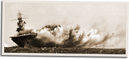

|
j
a v a s c r i p t |
November 1, 1942

USS Wasp
The naval propaganda blitz continues: La Vanguardia yesterday had the third and longest account yet of the September sinking of the Wasp. All four torpedoes hit, says the submariner. The Sunday Tribune has a picture of ten ship wakes in the ocean — "American Navy Fleeing from the Japs." The last edition of the afternoon Sunday News features a cartoon of planes and ships sinking in the Solomon Sea — "America's All-Saints' Day." Naky [Nakashima] notes "with pleasure that all the organs of the press in the Philippines have been unified into the Manila Shinbunsha under the mandate of the army" — and it's all for our advancement. Went to a packed Lyric Theater to hear the famous Tirso Cruz orchestra. Understandably, no one clapped in the end. The Vaudevilles usually end with the curtain closing as the whole cast finishes singing the Japanese March. |
|
|
|
|